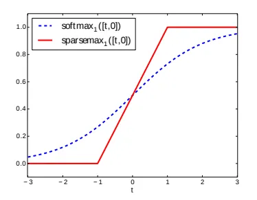

Sparsemax Loss
Table of Contents
Cascaded Forward Algorithm pg. 5:
Sparsemax function produces sparse output probabilities and encourages the model to only assign high probabilities to the most relevant classes, while setting all other probabilities to zero.
This is achieved by projecting the input vector onto a simplex, (a convex polytope whose vertices lie on the coordinate axes).
SparseMax of a input vector would be the point in the simplex which is nearest to the input vector. i.e. \(\textrm{sparsemax}(z) := \textrm{argmin}_{p\in\Delta^{c-1}} ||p - z||^2\)
where p is a point of the (c-1) dimensional simplex \(\Delta^{c-1} := \{p \in R^c| 1^T p =1, p \ge 0\}\)
Sparsemax can be efficiently computed using a sorting algorithm.

Figure 1: SparseMax In One Dimension (Source)
1. References
- Original Paper that introduced SparseMax: http://proceedings.mlr.press/v48/martins16.pdf